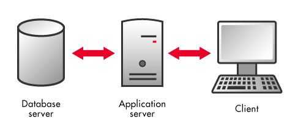
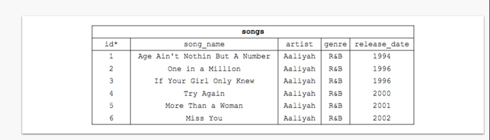
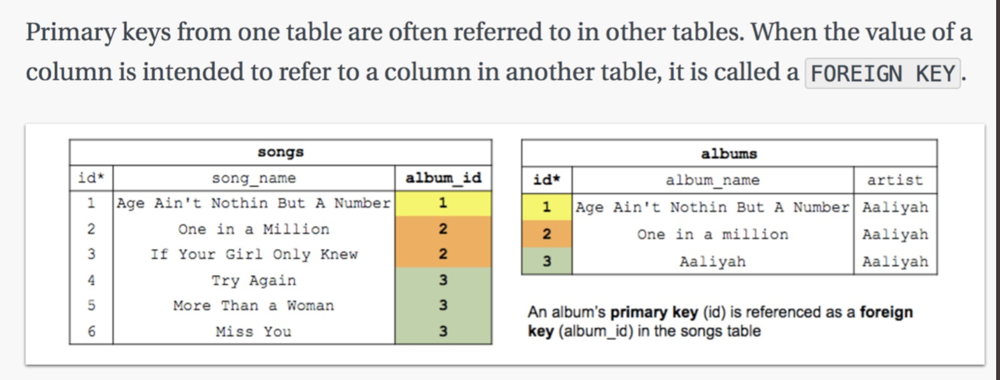
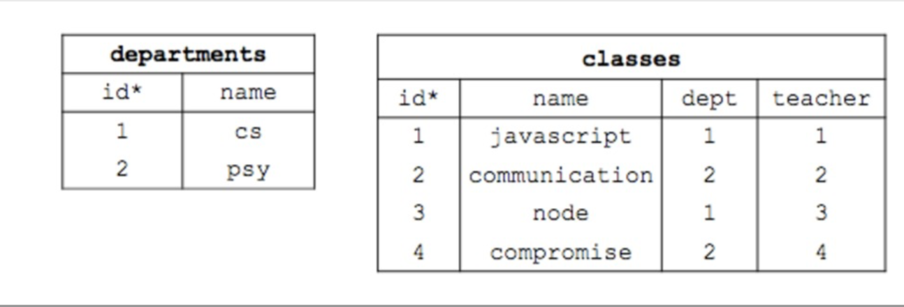
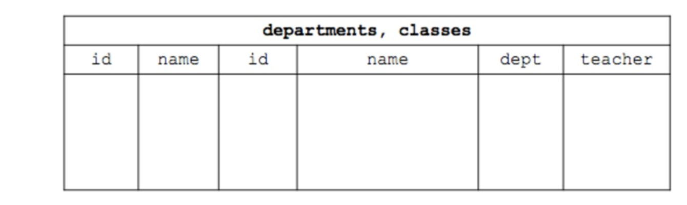
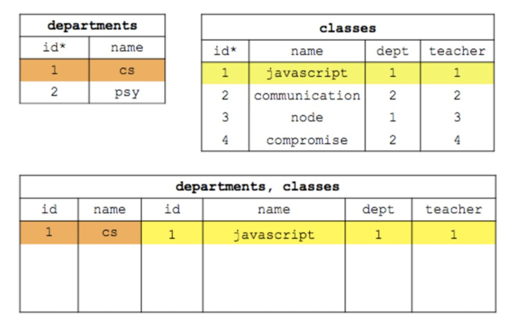
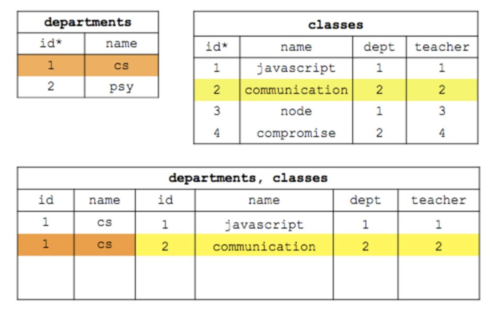
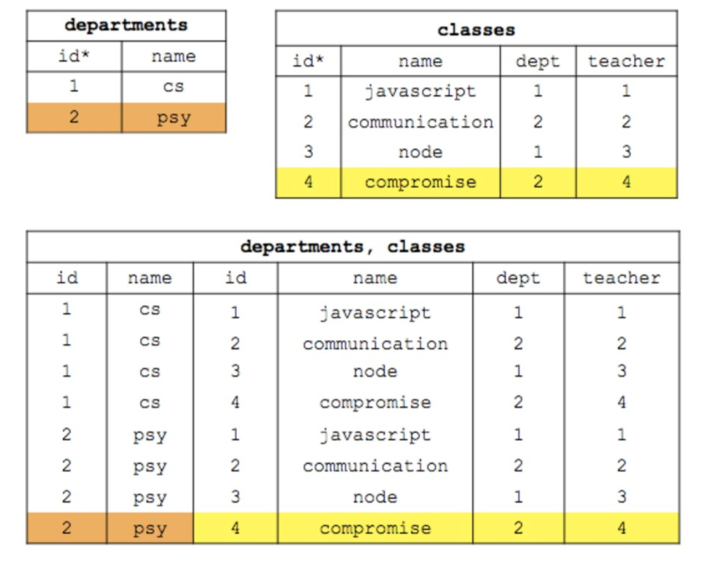

lab 5 SQL
Goals
- To understand what a database is
What is a database?
- We’ve already learned how to store data “in memory”. For example you can store things in a dictionary. But that gets inefficient very quickly, and when you restart your server, you reset all your values.

Coding exercise
- Create a new form where people can submit tweets (via a POST request) and save the value in a dictionary, which you then display on HTML
- Create a new form where people can submit tweets (via a POST request) and save the value into a file, which you then display on HTML
What is SQL?
SQL is a standard language for storing, manipulating and retrieving data in databases.
Install and setup SQLite3
We will initially use SQLite3 which is serverless.
brew install sqlite3- Run
sqlite3 classes.db - From the sqlite terminal you just opened do .table to display the tables of the database. You should see several table names including classes, teachers and more
- To make tables look pretty run
.header onand.mode column
Schema
Relational data lives inside tables contained in columns and rows. The rows and columns of a table define the properties and attributes of the kind of thing the table is storing. Each row is an instance of that kind of thing.
For example, a given table might store data on songs. The columns represent the song name, artist, genre, and release date. Each row represents a given song and contains an entry for each of the columns like so:

Coding exercise
- In sql you can view the schema of a table by typing
.schema <tablename>. What’s the schema for thedepartmentstable in the classes database provided to you? - Look up what a PRIMARY key is.
- Which column in the
departmentstable is uniquely identifying?
Primary keys from one table are often referred to in another. When the value of a column is used to refer to another column in a different table, it’s called a foreign key.
Using foreign keys is quintissential in relational databases. By referring to two data in columns of other tables, rather than storing the same data in two different tables, we can store it in a much more efficient way, and also will be easier to debug because we will only have to change it in one table.

- Look at the
teachersschema. What column is being used as a foreign key? Why might we use a foreign key here instead of storing the data directly in this table? - Use pen and paper for these 5 tables representing them as a simple spreadsheet like grids, using arrows to indicate where a particular column is stored in another table.
Querying the database
The most common SQL statement is SELECT, which is used to query the database using the following template: SELECT <column_name> [, <additional_column_names] FROM <table_name>. If you wish to select every column use a *
Coding exercise
- Display the
namecolumn for every row in the students table - Display every column for the
teacherstable. Thedepartmentcolumn just displays numbers. What do these numbers represent? Look at theteachersschema if you need to - Display every column in the
teacherstable then every column in thedepartmentstable. Just by looking at the tables, what is the name of the department thatbethis of?
Filtering the database
By default, SELECT will return all rows of a table. However, you will frequently wish to trim down which rows match your query. One way to do this is with a WHERE using the following syntax:
SELECT <column_name> from <table_name WHERE <some-condition>;
A simple some-condition is a value for a given column. You can evaluate
this value using =, !=, <, >, <=, >=, amongst others. Chain
together your conditions using AND and OR
For example, if I wanted to display all the columns for teh teachers table where the department id is 1 or 2:
SELECT * FROM teachers WHERE department = 1 OR department = 2;
Coding Exercises
- Display just the name column for all the students whose names are not naomi. (Note,
naomibeing text, should be placed in single quotes) - Display the name and department id of teachers whose own id is greater than 2 or whose name is ‘fred’
Pattern matching with LIKE
Aside from the comparison operators above, you can also use the LIKE keyword in conjunction with the % wildcard symbol to select rows based on patters you write. % will match 0 or more of any character. Using NOT LIKE instead of LIKE will select rows that do not much the pattern.
For example, to select all the class names that start with the letter ‘c’:
SELECT name from CLASSES WHERE name LIKE 'c%';
Coding Exercises
- Display the id and name of all the students whose names end in ‘m’
- Display all columns for students whose names do not contain the letter ‘a’. HINT: a more long-winded way to say “includes the letter ‘a’” is includes 0 or more of any letter followed by an ‘a’ followed by 0 or more of any letter
Limiting WHERE to a defined set with IN
- Using
INyou can filter your query against a set of matches you define. For example, to get the entries for teachers whose names are either ‘pamela’ or ‘sunny’:
SELECT * FROM teachers WHERE name IN ('pamela', 'sunny');
Perhaps you’re thinking you can have done this so:
SELECT * FROM teachers WHERE name = 'pamela' OR name = 'sunny';
You can. This is part of programming. When your work begins to get more complicated, there often is not a single correct way to proceed.
Coding Exercises
- Display the names of all the teachers whose id is
NOTeither 1,2, or 4 - Display the names of all the teachers whose department is either 1 or 4
Using IN to compose subqueries
Set it up so that you can view all the teavcher and department entries while reading this section.
In the last exxercise, you were able to print out teachers who had particular department ids. The department field in the teachers table. If you recall (look at the teacher schema if you do not), is a foreign key, referencing the id column (which is a uniquely identifying primary key) in the departments table. You might imagine wanting to answer a question like “who are all the teachers in ‘cs’ department”, instead of “all the teachers in the department with an id of 1”. In order to do this you would first need to find out what the id field is for the department with the name ‘cs’, and then, with that id, ask for any of the teachers whose department foreign key equals the id you just retrieved.
Thus we could first:
SELECT id from departments WHERE name = 'cs';
And then with our result, 1, issue a second query:
SELECT name FROM teachers WHERE department = 1;
The following is not legitimate SQL but represents what we would like to be able to do, namely, filter our second query by the results of the first.
SELECT name from teachers WHERE department = (SELECT id from departments WHERE name = 'cs');
The above can be only slightly modified to be valid SQL. Review the syntaxx for IN above, and you’ll notice the use of ( and ). In order to make this nested selection, simply use the IN command passing in a separate query as the possibilities to filter by. Thus:
SELECT name FROM teachers WHERE department IN (SELECT id from departments WHERE name = 'cs');
Coding Exercises
- Display the name and id of all the teachers in the ‘psy’ department. Should be ‘pamela’ and ‘sunny’ with their respective ids.
- Display the name of the department that ‘sunny’ teaches for (should be ‘psy’)
Querying multiple tables
You can select from multiple tables in SQL with the following syntax:
SELECT * FROM <table1>, <table2> [, <tablen>];
To help gain intuition about what will happen during a multitable select statement, display all the rows of the departments and then, in a separate query, all the rows from classes

Let’s create a new supertable that joins both tables together and let’s call it departments, classes. It will have all the columns of both tables joined together side by side.

Now let’s take every single row of the departments table and join it with every single row in the classes table

Then we get the next row

Eventually we get to the last combination

Coding Exercises
- Try to find out a way to get all the foreign keys of the classes table to match up with what it references to in the departments table. This will give you a supertable that will reflect what you expect in the real world.
Changing column names by using AS
We can modify column names by using the keyword AS for example, if we wanted to change the column name id within the table departments to dept_id we do
SELECT id AS dept_id from departments
Coding Exercises
- Select from the teachers and departments table but call the
idof teachersteacher_idand theidof departments,dept_id
Coding Exercises
- Create a file called
twitter.dbin your twitter analyzer repository. This is your database.
touch twitter.db - In your server code add
import sqlite3 - Connect to your database by following the instructions in the documentation
here - Draw your table schemas for your database. Think about what you need to store. What should the table name be? What columns should it have?
- Make sure you have an
idcolumn. Make it thePRIMARY KEYandAUTOINCREMENTit. Autoincrement will mean that every time you insert a new row, it will automatically give it an ID that is incremented from the last insertion. This means
that during an insertion to the database, you don’t have to explicitly add the id value. SQLITE3 will do it for you and give it an id value - Look at how they create tables in here. Create your table in your server code
- Now, every time you restart your server, you’ll be recreating the table. Add
IF NOT EXISTSon yourCREATE TABLEstatement. It should look something like
CREATE TABLE IF NOT EXISTS some_table (id INTEGER PRIMARY KEY AUTOINCREMENT, ...); - Create a new route called
twitter_cloneas in number 3. - Learn how to insert into a table in here. Add this to your route’s function for a POST. For your get, use a
SELECTstatement - Create your html file associated with the
twitter_cloneroute
Challenge
- Create a
Usertable think about what columns are needed - Each Tweet is associated with one User, but one User is associated with many tweets. Therefore each tweet must have a foreign key to a user’s id. Draw out the schema and create the tables
- Create a new html page called register and one called login.
- Create a new route called login and a new route called register.
- Create forms in each html page for login and registration
- On your login page, you can expect a user to submit their username and password. Search for the User in the database with that particular userid and password combination and redirect them to all their tweets.
- Learn about requiring authentication for certain pages. This will restrict access to the tweets page without logging in.
- This is similar to authentication in the real world, but is definitely not productionizable. For one, we would want to encrypt all the passwords and decrypt them. Here’s how to store passwords in a database with
bcrypt
Install and setup a Local MYSQL server
You will be using MYSQL as an RDBMS.
- Ensure you have
mysqlinstalled by runningwhich mysql. Runbrew install mysqlif it is not installed - Run
brew services start mysqlto start mysql - Run
brew services stop mysqlto stop mysql
When you interact with mysql you always interact as a specific user. MySQL comes out of the box with a single user already created called root.
- Create a password for
rootby usingmysqladmin -u root password. You will be asked to enter and confirm a new password. Make it really short for development purposes
Coding exercise
- Create a MYSQL database from an interactive shell.
1. mysql -u root -p, give the password you just created when prompted
2. Use CREATE and USE a new database
3. Create a table with at least 4 columns, one of them set as a primary key
4. Use DESCRIBE <tablename> to ensure you made the table
5. INSERT some rows into your table
6. Execute queries